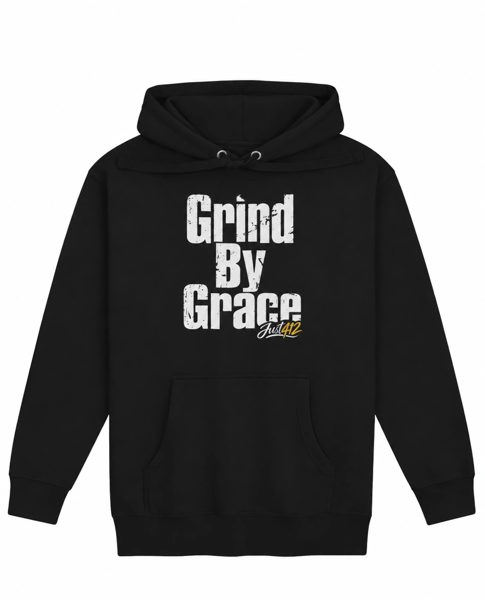
Apparel / Hoodie
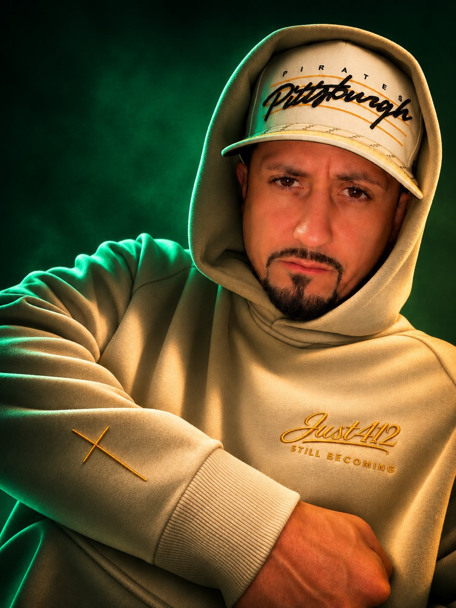
Just412 / Apparel & art
Merchandise and creative work with Pittsburgh in its roots, faith at its center, and a heart for those the world too often overlooks.
01 / The collection
Explore hoodies and tees inspired by faith, grace, and the worth of people too often overlooked.
Shop Just412 Store
Apparel / Hoodie
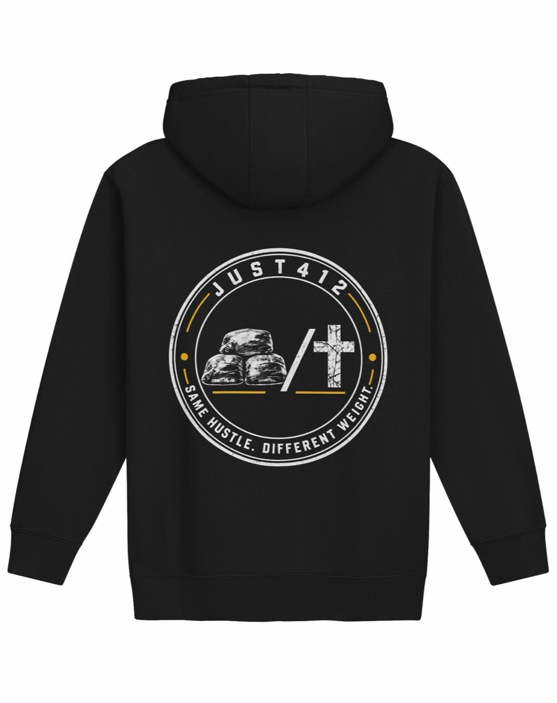
Shop this hoodie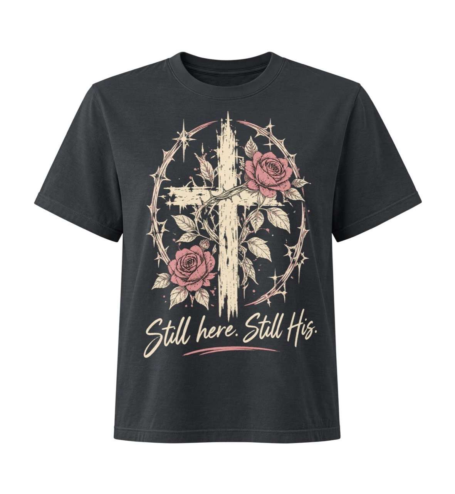
Women’s / T-shirt
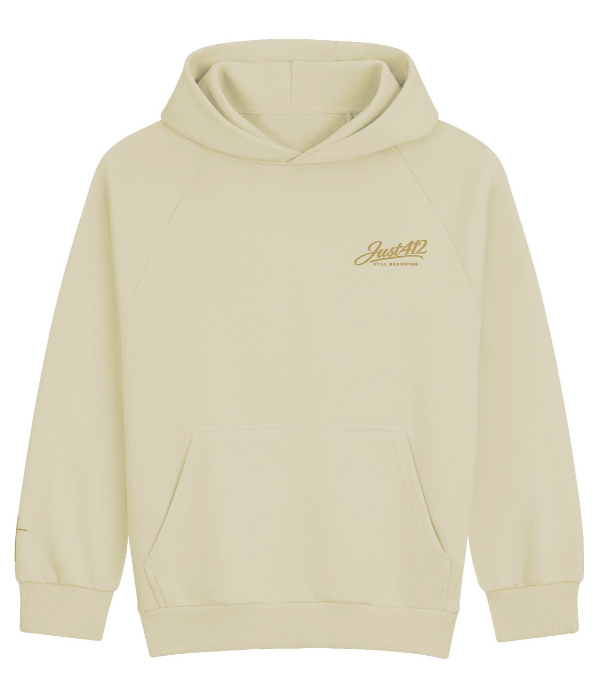
Apparel / Hoodie
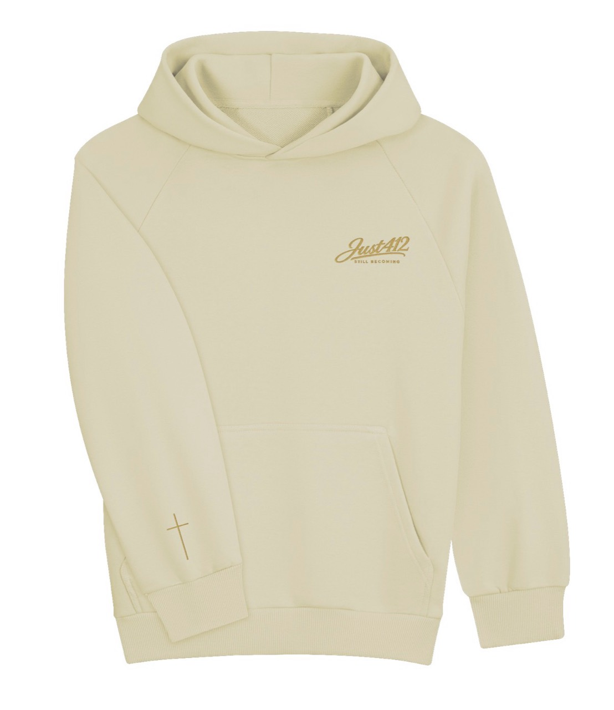
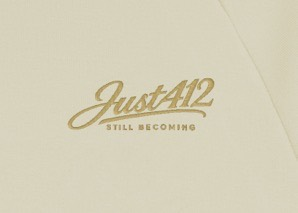
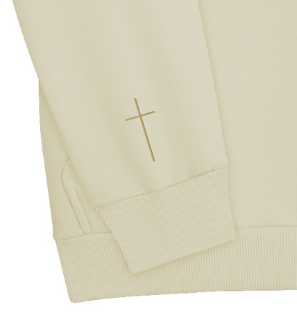
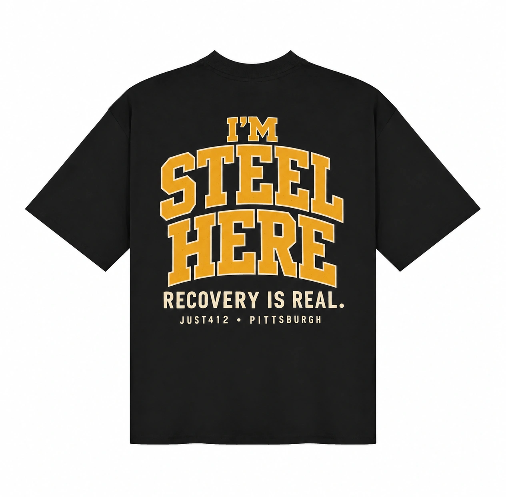
Apparel / T-shirt
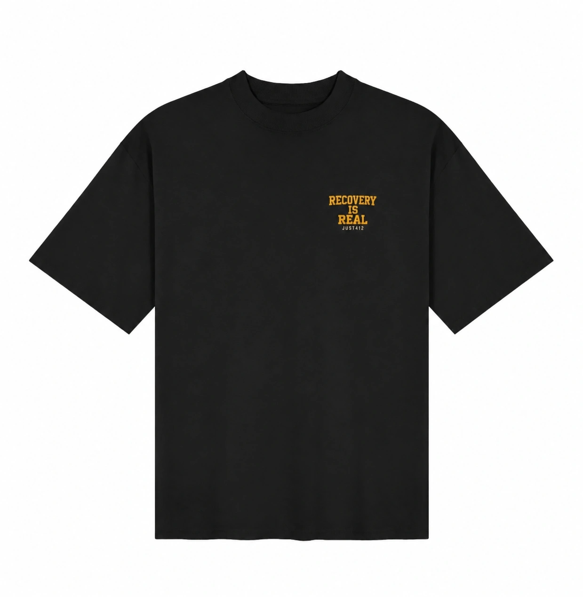
Shop the hoodies and tees on Fourthwall for options, current pricing, and checkout.
Shop Just412 Store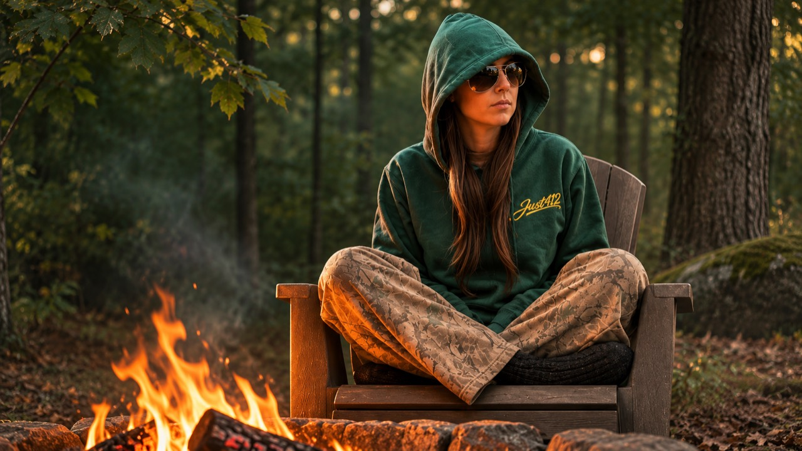
02 / The creative side
Artwork and creative work shaped by the same faith, grace, and Pittsburgh roots as our apparel.
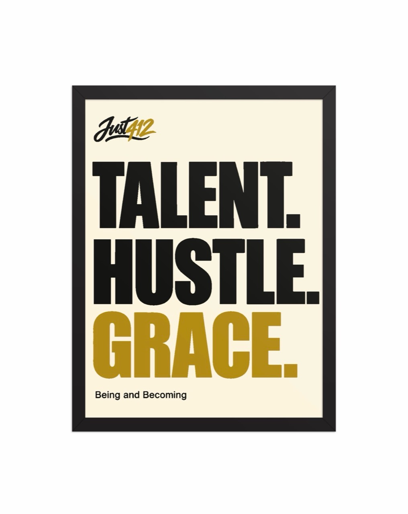
Art / Canvas
Shop Just412
Explore the full collection of apparel and art in the Just412 Store.
Shop Just412 Store